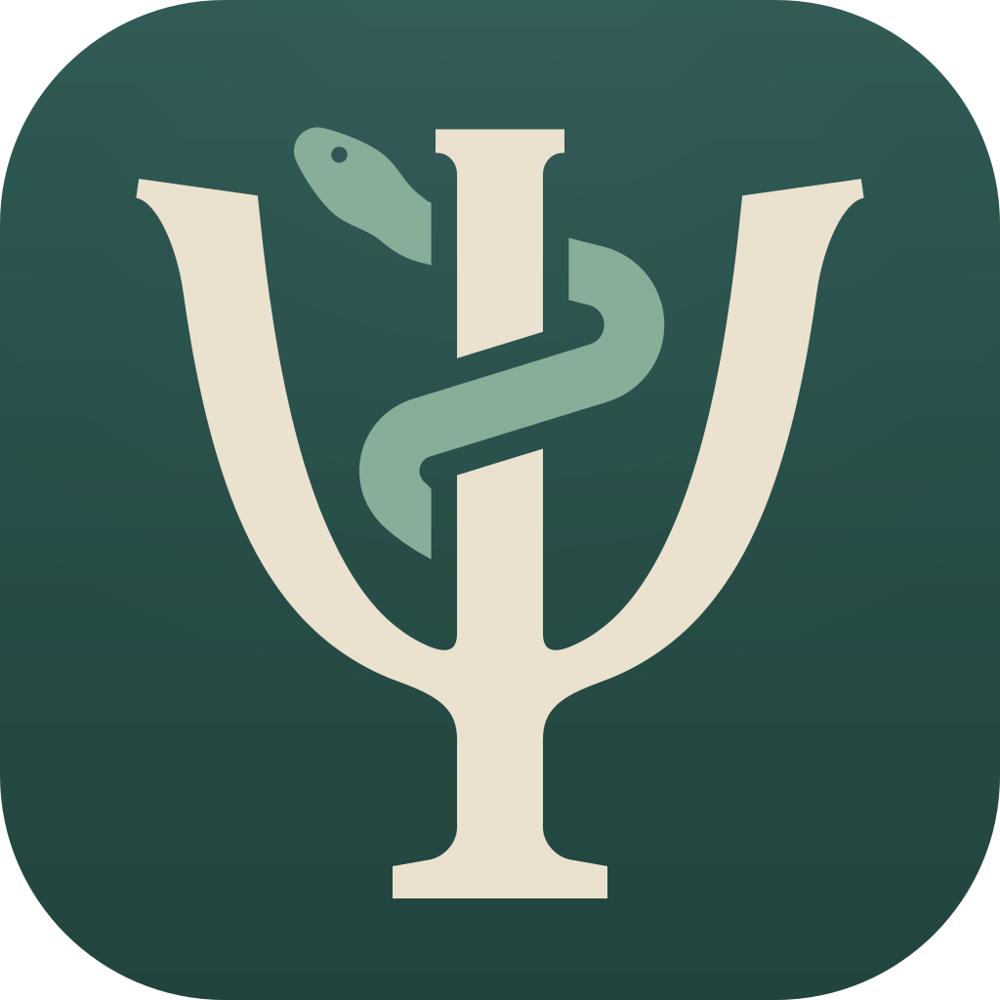

MedicusPolítica de privacidad
Vigente desde el 15 de octubre de 2026
En resumen
Medicus no tiene servidor, ni cuenta, ni analíticas, ni publicidad, ni código de terceros. La app nunca le envía al desarrollador tus registros ni los datos de tus pacientes, y el desarrollador no los recopila, recibe ni guarda. Tus registros se quedan en tus dispositivos, en sus copias de seguridad, en los archivos que exportes y, solo si activas la sincronización con iCloud, en tu propia base de datos privada de iCloud.
A quién se dirige esta política
Medicus es una app de gestión de consulta para profesionales independientes, como psicólogos y terapeutas. En esta política, “tú” es el profesional que usa Medicus. Los pacientes no usan la app; si eres paciente, consulta Si eres paciente.
Medicus no es un servicio de salud. No da consejos médicos, diagnósticos ni tratamientos, y no es un dispositivo médico.
Qué guarda Medicus y dónde
En tus dispositivos
Todo lo que registras: los ajustes de tu consultorio, tus servicios y precios; tus pacientes y sus datos (como nombres, fechas de nacimiento, números de identificación, datos de contacto, contactos de emergencia y fotos); las citas; las notas de sesión y sus adendas; los cargos, pagos, paquetes y sesiones prepagadas. Medicus también guarda algunos ajustes de cada dispositivo, como el Bloqueo de la app, tus opciones de notificaciones, la fecha de tu última exportación y el último estado conocido de tu compra.
Estos datos están en el almacenamiento privado de Medicus en el dispositivo. En el iPhone y el iPad los protege el cifrado del dispositivo, que está ligado a tu código. En una Mac, activa FileVault para tener una protección similar.
En las copias de seguridad de tus dispositivos
De forma predeterminada, los datos de Medicus se incluyen en las copias de seguridad de tus dispositivos: las de iCloud o en una computadora en el iPhone y el iPad, y copias como las de Time Machine en la Mac. Las copias de seguridad de iCloud solo tienen cifrado de extremo a extremo si la Protección de datos avanzada está activada. Puedes dejar fuera a Medicus con Excluir de las copias de seguridad en Ajustes › Privacidad y seguridad, en cada dispositivo.
En tu cuenta de iCloud, solo si activas la sincronización
La sincronización con iCloud está desactivada hasta que la actives, en cada dispositivo. Cuando está activada, Medicus guarda una copia de tu consultorio en tu propia cuenta de iCloud, en su base de datos privada, para que tus dispositivos con la misma cuenta de Apple estén al día. Apple guarda estos datos según la Política de privacidad de Apple, y el servicio de notificaciones push de Apple avisa a tus dispositivos cuando hay cambios. El desarrollador no tiene acceso a tus datos de iCloud.
- Los nombres, las fotos, los datos de contacto, las fechas de nacimiento, los números de identificación, las notas, los comentarios, los motivos, los lugares y enlaces de video de las citas, y las referencias de pago se cifran con claves de tu llavero de iCloud.
- Otros datos no tienen ese cifrado, como los montos y precios, las fechas y horas de las citas, las fechas y métodos de pago, los estados y las marcas (por ejemplo, que una nota es confidencial), tu título profesional, los ajustes de tu consultorio y los vínculos entre registros. Apple los protege como al resto de tus datos de iCloud.
- Si pierdes el acceso a tu llavero de iCloud, las partes cifradas no se pueden recuperar desde iCloud. Por eso Medicus pide una exportación reciente antes de activar la sincronización.
Si desactivas la sincronización, el dispositivo conserva sus datos y la copia en iCloud se queda en tu cuenta hasta que la elimines en los ajustes de almacenamiento de iCloud de tu cuenta de Apple.
En los archivos que exportas
Exportar crea un archivo con los datos de tu consultorio (JSON o CSV), o con los registros de un paciente, después de que confirmas que eres tú. El archivo incluye las notas confidenciales con su texto y no está cifrado: cualquiera que lo abra puede leer todo su contenido. Medicus te avisa antes de guardarlo. Dónde guardas los archivos exportados, y quién puede abrirlos, depende de ti. Medicus prepara cada archivo en su carpeta temporal y lo borra de ahí cuando termina la exportación.
Si alguna vez Medicus no puede abrir sus datos, su pantalla de recuperación ofrece Exportar archivos de datos para soporte, después de que confirmas que eres tú. Ese archivo es una copia de la base de datos de Medicus: contiene todos los registros, incluidas las notas confidenciales, y no está cifrado. Guárdalo con el mismo cuidado que una exportación y no se lo envíes por correo al desarrollador.
Qué sale de la app, y solo cuando tú lo eliges
- Recordatorios. Enviar recordatorio… escribe un mensaje con el nombre de pila del paciente, la fecha y la hora y, salvo que los quites, el lugar o el enlace de video y tu nombre (tu título profesional solo si lo agregas). Nunca incluye notas, el servicio, el comentario, montos ni los apellidos del paciente. Medicus abre WhatsApp, Mensajes o Mail (o el menú para compartir) con ese mensaje, y puedes editarlo antes de enviarlo tú. Para WhatsApp, Medicus usa el enlace wa.me de WhatsApp, que lleva el número del paciente y el mensaje; si WhatsApp no está instalado, el enlace abre el sitio web de WhatsApp en tu navegador. Una vez que lo envías, el mensaje lo gestionan esa app y su proveedor, según sus propias políticas de privacidad.
- Llamadas, WhatsApp, correos y enlaces de video. Abren tu app de teléfono, WhatsApp (con su enlace wa.me), tu app de correo o de video, o tu navegador, con el número o la dirección que elegiste.
- Copiar. Copiar nota deja el texto de la nota solo en el dispositivo donde la copiaste: en el iPhone y el iPad se borra después de 2 minutos, y en la Mac queda fuera del Portapapeles universal. El texto que copias con el comando Copiar del sistema sigue el comportamiento del sistema, así que el Portapapeles universal puede llevarlo a tus dispositivos cercanos con la misma cuenta de Apple.
- El dictado es el del teclado del sistema y usa el reconocimiento de voz de Apple. En los dispositivos e idiomas compatibles, funciona en el propio dispositivo; si no, Apple puede procesarlo en sus servidores. Se rige por la política de privacidad de Apple.
- Teclados. En el iPhone y el iPad, Medicus solo permite los teclados de Apple, así que los teclados de terceros nunca ven lo que escribes.
Notificaciones
Las notificaciones están desactivadas hasta que las actives en Ajustes › Notificaciones, en cada dispositivo. Se programan en el propio dispositivo, no se envían desde un servidor. Nunca muestran nombres de pacientes, texto de notas, servicios ni montos. Puedes elegir agregar iniciales como «AL», que se omiten mientras el Modo privado está activado. En el iPhone y el iPad, el sistema puede activar Medicus brevemente en segundo plano para mantenerlas al día; no se envía nada a ningún lado.
Face ID, Touch ID, cámara y fotos
El Bloqueo de la app, las notas confidenciales y los demás pasos en los que Medicus confirma que eres tú usan la verificación del sistema: Face ID, Touch ID o tu código (en una Mac, Touch ID o tu contraseña de inicio de sesión). Medicus solo sabe si tuvo éxito y nunca recibe datos biométricos. En el iPhone y el iPad, Medicus usa la cámara solo cuando tomas la foto de perfil de un paciente, y el selector de fotos solo le da la foto que eliges. Medicus guarda solo una copia pequeña de cada foto (de 256 píxeles como máximo), como cualquier otro registro.
Compras
La prueba gratis y el Desbloqueo de Medicus son compras integradas que Apple gestiona a través del App Store. Apple procesa cualquier pago. Medicus comprueba tus compras en el dispositivo y recuerda ahí su último estado conocido. El desarrollador nunca ve tus datos de pago, y la app no le envía nada sobre ti.
Qué recibe el desarrollador
Nada desde la app. Medicus no tiene servidor propio y no contiene analíticas, informes de fallos, publicidad, rastreo ni código de terceros. No comparte ni vende datos, porque nunca recopila ninguno. Los únicos servicios que usa son de Apple: iCloud (solo para la sincronización, cuando la configuras y mientras está activada), el App Store para las compras y las notificaciones del sistema.
Dos cosas llegan al desarrollador fuera de la app:
- Los correos que envías. Si escribes a soporte, el desarrollador recibe tu dirección de correo y tu mensaje, los usa solo para responderte y los borra cuando ya no hacen falta. Por favor, no incluyas nombres de pacientes, notas ni otros datos de pacientes, y no adjuntes archivos exportados ni archivos de datos.
- Los informes de Apple. Si eliges compartir análisis con los desarrolladores de apps en los ajustes de tu dispositivo, Apple puede darle al desarrollador informes de fallos y estadísticas de uso. Apple también da a los desarrolladores informes de ventas y descargas. Estos vienen de Apple, según la política de privacidad de Apple, y no incluyen tus registros ni los datos de tus pacientes.
Tus responsabilidades
Medicus es un programa que usas en tus propios dispositivos. Cuando a tu consulta le aplican leyes de protección de datos y de privacidad en salud, como la LFPDPPP en México, el RGPD en la Unión Europea o HIPAA en Estados Unidos, tú eres el responsable de los datos personales y de salud que guardas sobre tus pacientes. Por ejemplo, puede que necesites una base legal para guardarlos, informar a tus pacientes cómo los guardas, atender sus solicitudes y conservar los expedientes clínicos durante el tiempo que exija la ley.
La app nunca le envía los datos de tus pacientes al desarrollador, y el desarrollador no tiene acceso a ellos, así que no los trata por cuenta tuya, como lo haría un encargado del tratamiento o un socio comercial (business associate) según HIPAA. Apple ofrece iCloud según sus propias condiciones. Apple no firma acuerdos de socio comercial (BAA) para iCloud, así que si te aplica HIPAA, la opción prudente es usar Medicus sin sincronización con iCloud, excluido de las copias de seguridad y con exportaciones regulares a un lugar que tú controles.
Medicus te ayuda con las solicitudes de tus pacientes: Exportar paciente… te da los registros de un paciente en un archivo, y Eliminar definitivamente… elimina a un paciente. Eliminar sigue siendo posible incluso cuando la prueba gratis termina sin una compra.
Esta sección describe cómo funciona Medicus. No es asesoría legal. Consulta tus obligaciones con tu colegio profesional o con un abogado.
Si eres paciente
Si tu profesional usa Medicus, tus registros están en sus dispositivos y, si usa la sincronización con iCloud, en su cuenta de iCloud, y es tu profesional quien decide cómo se guardan. Para ver, corregir, obtener una copia o eliminar tus registros, pídeselo a tu profesional. El desarrollador no tiene acceso a tus registros y no puede verlos, cambiarlos ni eliminarlos.
Menores
Medicus está hecha para profesionales, no para menores. Los registros de pacientes de cualquier edad, incluidos los menores, los guarda el profesional como cualquier otro registro, y el desarrollador no recibe ninguno.
Conservación y eliminación de datos
Medicus nunca elimina expedientes clínicos por sí sola. Tú decides qué conservar y qué eliminar; la página de Soporte explica cómo. Con la sincronización con iCloud activada, lo que eliminas también se elimina en tus otros dispositivos y en tu copia de iCloud. No se elimina de las copias de seguridad ni de los archivos exportados, ni de una copia en iCloud que quedó de antes de desactivar la sincronización: esas las eliminas tú. En una Mac, al eliminar la app Medicus sus datos pueden quedarse en la Mac. Como el desarrollador no tiene ninguno de tus datos, no hay nada que el desarrollador deba eliminar.
Seguridad
Medicus protege tus registros con el Bloqueo de la app (Face ID, Touch ID o tu código), el Modo privado, las notas confidenciales, el cifrado propio del dispositivo y, con la sincronización activada, el cifrado del llavero de iCloud para los campos sensibles. El Bloqueo de la app y todos los pasos en los que Medicus confirma que eres tú necesitan un código en el dispositivo (una contraseña de inicio de sesión en una Mac): sin él, Medicus no puede preguntar quién eres, así que esos pasos continúan sin verificación, y Medicus muestra un aviso para que configures uno. Ningún sistema es perfecto, así que usa un código en tus dispositivos, mantenlos actualizados y guarda los archivos exportados con cuidado.
Este sitio web
Este sitio no usa cookies, analíticas ni rastreadores. Está alojado en GitHub Pages, y GitHub registra las direcciones IP de quienes lo visitan por motivos de seguridad, según su propia declaración de privacidad.
Cambios
Si esta política cambia, la nueva versión se publicará en esta página con una nueva fecha de vigencia.
Contacto
Medicus está hecha por Jesus Molina. Para preguntas sobre privacidad, escribe a colgat3666@proton.me.